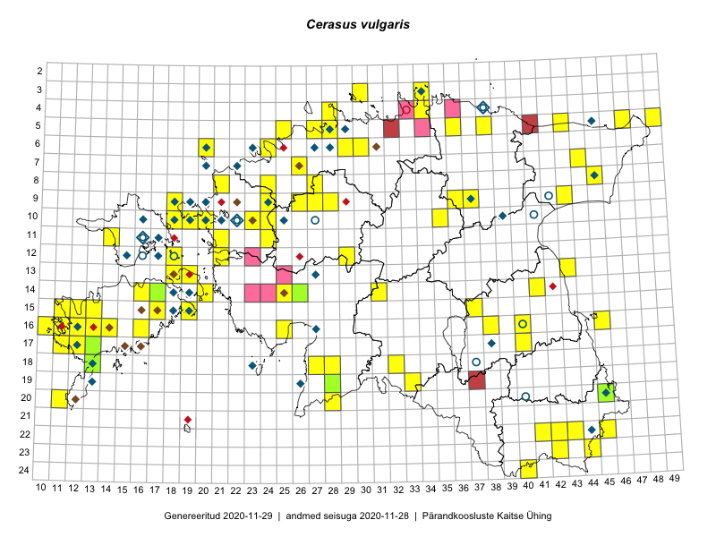

Cerasus vulgaris
Uuendatud: 2016-12-08
Kaardile koondatud taksonid: Cerasus vulgaris Mill.; Prunus cerasus L.

Kaart põhineb 95 vaatlusel. Taime on leitud 59 ruudust.
| Ruut | Vaatleja(d) | Vaatlusaeg | Kirje tüüp | Viide andmebaasikirjele |
|---|---|---|---|---|
| 18-27 | Peedu Saar, Liina Oja | 2015-05-20 | ruut/ala | vaata PlutoFis |
| 18-27 | Peedu Saar, Liina Oja | 2015-05-22 | punkt | vaata PlutoFis |
| 16-25 | Peedu Saar, Liina Oja | 2015-05-21 | ruut/ala | vaata PlutoFis |
| 16-25 | Peedu Saar, Liina Oja | 2015-05-21 | punkt | vaata PlutoFis |
| 18-28 | Peedu Saar, Liina Oja | 2015-05-20 | ruut/ala | vaata PlutoFis |
| 18-28 | Peedu Saar, Liina Oja | 2015-05-20 | punkt | vaata PlutoFis |
| 10-24 | Peedu Saar, Toomas Kukk | 2015-05-26 | ruut/ala | vaata PlutoFis |
| 12-29 | Tiit Hallikma, Indrek Tammekänd, Toomas Kukk | 2015-06-09 | ruut/ala | vaata PlutoFis |
| 12-29 | Tiit Hallikma, Indrek Tammekänd, Toomas Kukk | 2015-06-09 | punkt | vaata PlutoFis |
| 08-45 | Peedu Saar, Liina Oja | 2015-07-22 | punkt | vaata PlutoFis |
| 14-31 | Peedu Saar, Liina Oja | 2015-06-10 | punkt | vaata PlutoFis |
| 05-49 | Tiit Hallikma, Toomas Kukk | 2015-07-22 | ruut/ala | vaata PlutoFis |
| 05-49 | Tiit Hallikma, Toomas Kukk | 2015-07-22 | punkt | vaata PlutoFis |
| 14-31 | Peedu Saar, Liina Oja | 2015-06-10 | ruut/ala | vaata PlutoFis |
| 08-45 | Peedu Saar, Liina Oja | 2015-07-22 | ruut/ala | vaata PlutoFis |
| 08-45 | Toomas Kukk, Tiit Hallikma | 2015-06-01 | ruut/ala | vaata PlutoFis |
| 10-24 | Toomas Kukk, Peedu Saar | 2015-05-26 | punkt | vaata PlutoFis |
| 16-12 | Toomas Kukk, Mari Reitalu | 2014-06-20 | ruut/ala | vaata PlutoFis |
| 05-38 | Rein Kalamees, Kersti Püssa | 2015-05-29 | punkt | vaata PlutoFis |
| 05-47 | Tiit Hallikma, Toomas Kukk | 2015-07-22 | ruut/ala | vaata PlutoFis |
| 05-47 | Tiit Hallikma, Toomas Kukk | 2015-07-22 | punkt | vaata PlutoFis |
| 07-44 | Tiit Hallikma, Toomas Kukk | 2015-07-20 | ruut/ala | vaata PlutoFis |
| 07-44 | Tiit Hallikma, Toomas Kukk | 2015-07-20 | punkt | vaata PlutoFis |
| 08-45 | Tiit Hallikma, Toomas Kukk | 2015-06-01 | punkt | vaata PlutoFis |
| 05-36 | Rein Kalamees, Kersti Püssa | 2015-06-06 | ruut/ala | vaata PlutoFis |
| 20-28 | Ott Luuk, Eerik Leibak, Liisa Rennel | 2015-05-20 | punkt | vaata PlutoFis |
| 15-37 | Eeva-Maria Jeletsky, Tarmo Niitla | 2015-05-05 | ruut/ala | vaata PlutoFis |
| 15-37 | Eeva-Maria Jeletsky, Tarmo Niitla | 2015-05-05 | punkt | vaata PlutoFis |
| 11-14 | Eeva-Maria Jeletsky, Tarmo Niitla | 2015-06-28 | punkt | vaata PlutoFis |
| 11-14 | Eeva-Maria Jeletsky, Tarmo Niitla | 2015-06-28 | ruut/ala | vaata PlutoFis |
| 17-13 | Triin Reitalu, Mari Reitalu | 2015-05-18 | ruut/ala | vaata PlutoFis |
| 17-13 | Triin Reitalu, Mari Reitalu | 2015-05-18 | punkt | vaata PlutoFis |
| 24-40 | Eeva-Maria Jeletsky, Tarmo Niitla | 2015-07-25 | punkt | vaata PlutoFis |
| 06-24 | Erkki Otsman, Sergei Smirnov | 2015-05-29 | ruut/ala | vaata PlutoFis |
| 24-40 | Eeva-Maria Jeletsky, Tarmo Niitla | 2015-07-25 | ruut/ala | vaata PlutoFis |
| 16-13 | Mari Reitalu | 2015-08-29 | ruut/ala | vaata PlutoFis |
| 16-13 | Mari Reitalu | 2015-08-29 | punkt | vaata PlutoFis |
| 05-28 | Erkki Otsman, Sergei Smirnov | 2015-06-26 | ruut/ala | vaata PlutoFis |
| 15-12 | Mari Reitalu, Triin Reitalu | 2015-05-24 | ruut/ala | vaata PlutoFis |
| 15-12 | Mari Reitalu, Triin Reitalu | 2015-05-24 | punkt | vaata PlutoFis |
| 22-42 | Karin Kikas, Elle Rajandu | 2015-05-25 | ruut/ala | vaata PlutoFis |
| 14-41 | Karin Kikas, Elle Rajandu | 2015-05-18 | ruut/ala | vaata PlutoFis |
| 14-41 | Karin Kikas, Elle Rajandu | 2015-05-18 | punkt | vaata PlutoFis |
| 16-13 | Mari Reitalu, Oliver Parrest | 2015-07-27 | ruut/ala | vaata PlutoFis |
| 15-13 | Mari Reitalu, Oliver Parrest | 2015-05-14 | ruut/ala | vaata PlutoFis |
| 20-11 | Mari Reitalu, Oliver Parrest | 2015-05-26 | ruut/ala | vaata PlutoFis |
| 14-16 | Mari Reitalu, Sirje Azarov | 2015-05-09 | ruut/ala | vaata PlutoFis |
| 14-16 | Mari Reitalu, Sirje Azarov | 2015-05-09 | punkt | vaata PlutoFis |
| 13-43 | Karin Kikas, Elle Rajandu | 2015-05-19 | punkt | vaata PlutoFis |
| 16-10 | Sirje Azarov, Mari Reitalu | 2015-05-22 | ruut/ala | vaata PlutoFis |
| 16-10 | Sirje Azarov, Mari Reitalu | 2015-05-23 | punkt | vaata PlutoFis |
| 22-41 | Karin Kikas, Elle Rajandu | 2015-05-25 | punkt | vaata PlutoFis |
| 16-13 | Mari Reitalu, Oliver Parrest | 2015-07-27 | punkt | vaata PlutoFis |
| 16-13 | Mari Reitalu, Oliver Parrest | 2015-07-27 | punkt | vaata PlutoFis |
| 15-13 | Mari Reitalu, Oliver Parrest | 2015-05-14 | punkt | vaata PlutoFis |
| 05-25 | Mari Metsoja, Jaak-Albert Metsoja | 2015-05-30 | ruut/ala | vaata PlutoFis |
| 13-19 | Kadri Tali | 2015-06-03 | ruut/ala | vaata PlutoFis |
| 16-45 | Peedu Saar | 2016-05-11 | punkt | vaata PlutoFis |
| 16-45 | Peedu Saar | 2016-05-11 | ruut/ala | vaata PlutoFis |
| 10-20 | Peedu Saar, Toomas Kukk | 2016-05-12 | punkt | vaata PlutoFis |
| 10-20 | Toomas Kukk, Peedu Saar | 2016-05-12 | ruut/ala | vaata PlutoFis |
| 09-18 | Toomas Kukk, Peedu Saar | 2016-05-13 | punkt | vaata PlutoFis |
| 09-24 | Tõnu Ploompuu, Sirje Lagle | 2015-08-18 | ruut/ala | vaata PlutoFis |
| 09-26 | Tõnu Ploompuu | 2015-05-20 | ruut/ala | vaata PlutoFis |
| 23-42 | Rein Kalamees, Eerik Leibak | 2016-06-14 | ruut/ala | vaata PlutoFis |
| 22-43 | Toomas Kukk, Tiit Hallikma, Johannes Kõdar | 2016-06-15 | ruut/ala | vaata PlutoFis |
| 23-42 | Rein Kalamees, Eerik Leibak | 2016-06-14 | punkt | vaata PlutoFis |
| 23-44 | Rein Kalamees, Eerik Leibak | 2016-06-15 | ruut/ala | vaata PlutoFis |
| 23-44 | Rein Kalamees, Eerik Leibak | 2016-06-15 | punkt | vaata PlutoFis |
| 10-18 | Toomas Kukk, Sander Laherand | 2016-07-07 | punkt | vaata PlutoFis |
| 14-25 | Toomas Kukk, Oliver Parrest | 2016-07-08 | ruut/ala | vaata PlutoFis |
| 10-19 | Liina Oja, Rein Kalamees | 2016-07-07 | punkt | vaata PlutoFis |
| 09-26 | Thea Kull, Oliver Parrest | 2016-07-08 | punkt | vaata PlutoFis |
| 10-18 | Sander Laherand, Toomas Kukk | 2016-07-07 | ruut/ala | vaata PlutoFis |
| 18-32 | Toomas Kukk, Hannes Pehlak | 2016-07-19 | ruut/ala | vaata PlutoFis |
| 10-35 | Toomas Kukk, Tiit Hallikma | 2016-07-25 | ruut/ala | vaata PlutoFis |
| 16-38 | Rein Kalamees, Kersti Püssa | 2016-07-19 | punkt | vaata PlutoFis |
| 05-43 | Erkki Otsman, Sergei Smirnov | 2016-06-17 | ruut/ala | vaata PlutoFis |
| 06-29 | Toomas Kukk, Sander Laherand | 2016-08-29 | punkt | vaata PlutoFis |
| 19-33 | Liina Oja, Elle Rajandu | 2016-07-18 | punkt | vaata PlutoFis |
| 14-25 | Toomas Kukk, Oliver Parrest | 2016-07-08 | punkt | vaata PlutoFis |
| 09-37 | Mari Reitalu, Triin Reitalu | 2016-07-11 | ruut/ala | vaata PlutoFis |
| 06-29 | Sander Laherand, Toomas Kukk | 2016-08-29 | ruut/ala | vaata PlutoFis |
| 12-21 | Rein Kalamees, Liina Oja | 2016-07-08 | ruut/ala | vaata PlutoFis |
| 14-20 | Mari Reitalu, Sirje Azarov | 2016-08-17 | ruut/ala | vaata PlutoFis |
| 09-28 | Rein Kalamees, Liina Oja | 2016-07-06 | ruut/ala | vaata PlutoFis |
| 15-11 | Toomas Kukk, Meeli Mesipuu, Mari Reitalu | 2016-10-07 | punkt | vaata PlutoFis |
| 15-13 | Toomas Kukk, Meeli Mesipuu, Mari Reitalu | 2016-10-06 | punkt | vaata PlutoFis |
| 10-35 | Tiit Hallikma, Toomas Kukk | 2016-07-25 | punkt | vaata PlutoFis |
| 06-30 | Kadi-Liis Kesler, Tiina Elvisto | 2015-05-26 | ruut/ala | vaata PlutoFis |
| 04-28 | Tiina Elvisto | 2015-08-09 | ruut/ala | vaata PlutoFis |
| 06-20 | Jaak-Albert Metsoja, Mari Metsoja | 2016-06-30 | ruut/ala | vaata PlutoFis |
| 08-24 | Jaak-Albert Metsoja, Mari Metsoja | 2016-07-08 | ruut/ala | vaata PlutoFis |
| 03-34 | Hannes Pehlak, Toomas Kukk | 2016-07-26 | ruut/ala | vaata PlutoFis |
| 05-25 | Jaak-Albert Metsoja, Mari Metsoja | 2015-05-30 | punkt | vaata PlutoFis |